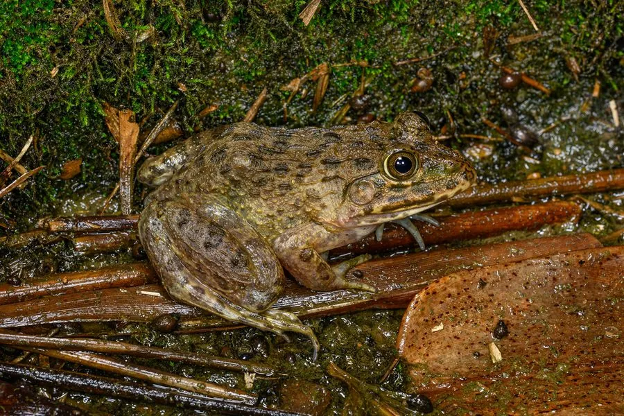

两栖动物 · 动物界
虎纹蛙 Hoplobatrachus rugulosus

体形较大的农田蛙类，背部有虎皮状斑纹，因长期被大量捕食而数量下降，已被列为国家二级保护动物。
- 分类
- 门脊索动物门纲两栖纲目无尾目科叉舌蛙科属虎纹蛙属
- 栖息环境
- 稻田、池塘、沟渠、沼泽及丘陵山区的静水环境
- 地理分布
- 中国南方多数省区，以及东南亚的稻田与湿地
- 保护级别
- IUCN 无危（LC）；中国国家二级保护动物
物种志
虎纹蛙体长 7–12 厘米，雌蛙可更大，是农田中体型较大的蛙类。它背部皮肤粗糙，有长短不一的纵肤褶，呈黄绿或灰棕色，并分布深色不规则斑纹，形似虎皮，“虎纹蛙”由此得名；腹面白色，四肢粗壮，趾间全蹼，善跳跃和游泳。
它分布于中国南方及东南亚，栖息于稻田、池塘、沟渠与沼泽，性情较凶猛，捕食昆虫、蚯蚓、小鱼、虾、蟹及其他蛙类。每年 4–7 月繁殖，雌蛙产卵 1000–3000 枚，卵浮在水面，约 2–3 天孵化，蝌蚪经 1–2 个月变态。虎纹蛙肉质鲜美，长期被大量捕捉作为“田鸡”食用，加上农药污染和栖息地减少，野生资源大幅下降，中国已将其列为国家二级保护动物，禁止非法捕捉和交易。
形态与习性
- 食性昆虫、蚯蚓、小鱼、虾、蟹及其他蛙类
- 体长7–12 cm
- 体重约 100–250 g
- 寿命约 8 年
- 繁殖卵生，1000–3000 枚，约 2–3 天孵化
- 活动节律昼伏夜出
- 保护中国国家二级保护动物，禁止捕捉交易
趣味知识
- 虎纹蛙背部有长短不一的肤褶和虎皮状斑纹，与普通青蛙容易区分。
- 它的体型比一般青蛙大，肉质鲜美，曾是被捕食最严重的“田鸡”之一。
- 虎纹蛙已被列为国家二级保护动物，捕捉、买卖野生个体均属违法。